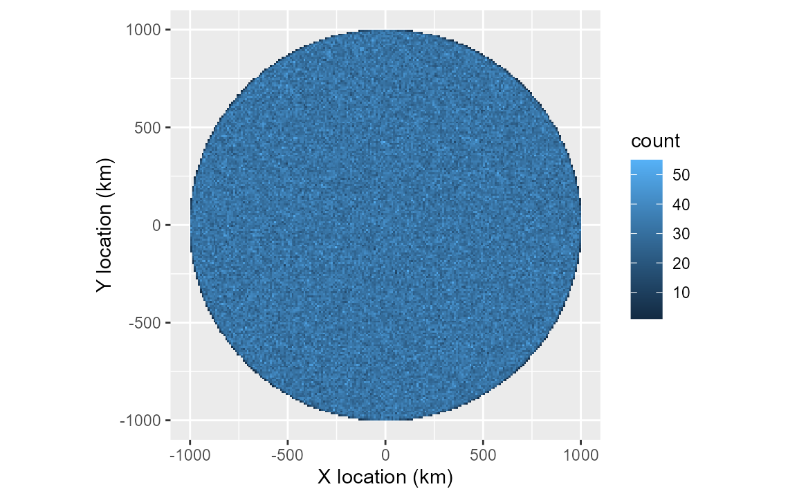
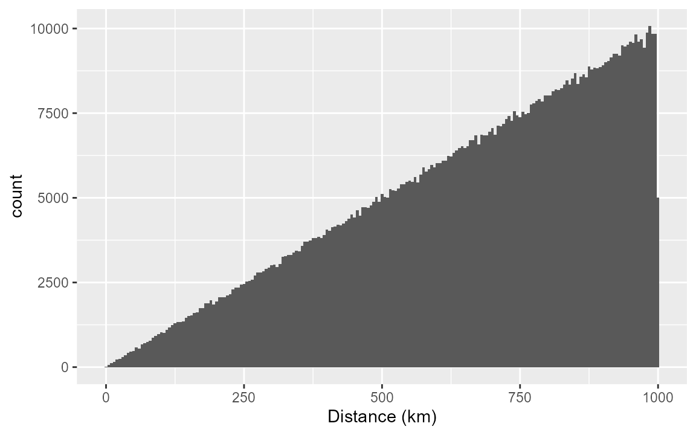
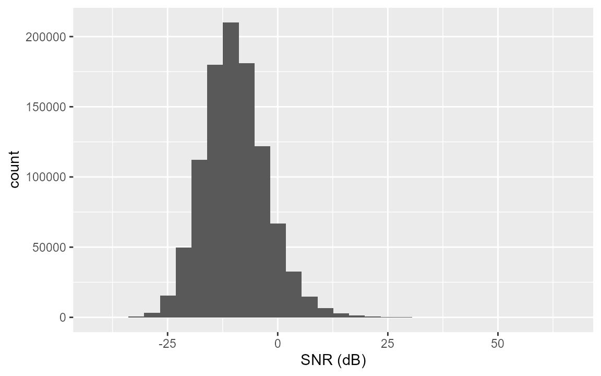
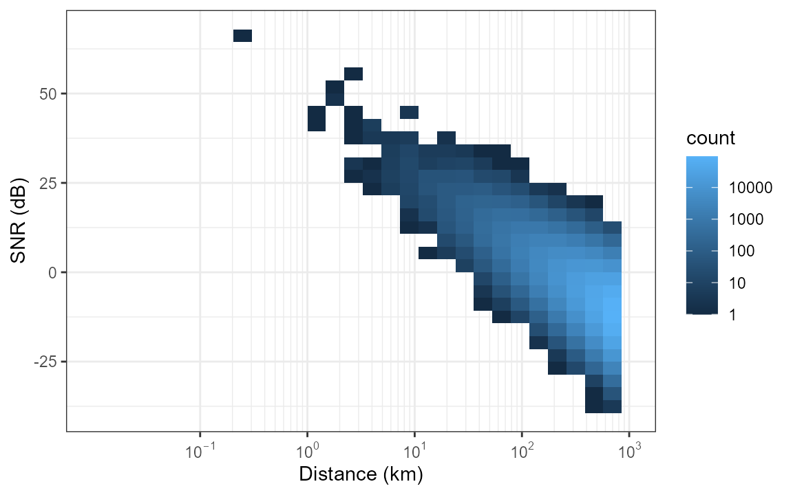
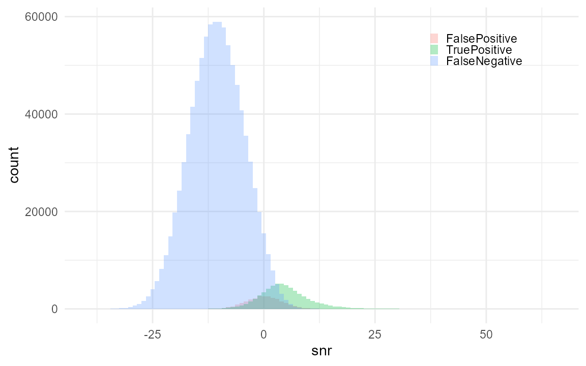
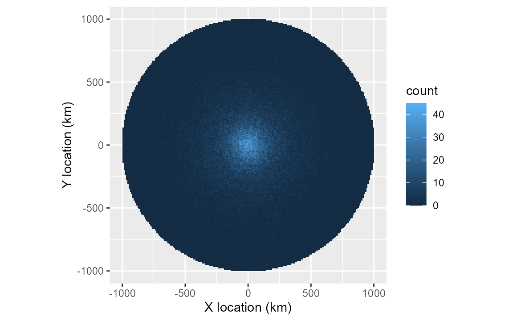

Simple test of callDensity R package
Create a synthetic dataset with known (specified) values for all parameters for testing the callDensity R package which implements the methods described by Castro et al. (2024). This package implements a solution for call density estimation from single sensors (hydrophones) via the density equation
where: is call density, is number of calls, is false discovery rate, is number of sensors (here always 1), is the duration of data analysed (in hours), is the probability of detection in the study area, and is the study area (in km^2).
1) Generate known call distribution in space.
Start with n calls within radius R of the hydrophone. This should produce a known call density with a uniform random distribution in a circle around the hydrophone.
n = 1e6; # number of simulated calls (regardless of whether detected or not);
R = 1e6; # radius in m (i.e. 1e6=1000km)
k <- 1 # number of sensors (always 1 for single hydrophone moorings)
minDate <- as.POSIXct("2025-01-01")
maxDate <- as.POSIXct("2026-01-01")
Time <- as.numeric(difftime(maxDate,minDate,unit="days"))/365 # in years
# Call density, D_c is n/A
A = studyArea(R/1e3) # Circular study area in km^2
TrueCallDensity = n/(A*Time) # calls/km^2/time
# 1) Generate n uniformly distributed calls within radius R and time period Time
sim <- simCallLocation(n=n, R=R, minDate=minDate, maxDate=maxDate)
# 'Spatial' map showing true location of all calls
ggplot(data=sim, aes(x=x/1e3,y=y/1e3))+
geom_bin_2d(alpha=1,binwidth=c(10,10))+
coord_equal()+
xlab("X location (km)")+
ylab("Y location (km)")
2) Calculate distances of calls.
Assume recorder is located at centre of study area.
Distances are the magnitude of the x & y location (and stored in column named ‘d’).
Uniform density and increasing area with larger distances should yield a triangular distance distribution.
ggplot(data=sim, aes(x=d/1e3))+
geom_histogram(binwidth = 5)+
xlab("Distance (km)")
3) Assign sonar equation parameters to each call (SL,NL,TL)
a) Source Level (SL)
Assume source level, SL, is that of Antarctic blue whale song (as in Castro et al. (2024)).
However, to keep things clearer in this simple example, we use a lower standard deviation than was used by Castro et al. (2024).
The values we chose match reasonably well with those that have been estimated for this animal mean of 189 dB and standard deviation of 3-8 dB. Realistic values should help make our simulation better match reality.
SL <- data.frame(mean=190, sd=4, sampleSize=350)b) Noise Level (NL).
We assign NL to each call using a similarly realistic parameters for the distribution of NL.
Our NL distribution resembles the same real-world measurements used by Castro et al. (2024) that were derived from noise samples in the same band, but adjacent in time to the Antarctic blue whale calls they detected. Again, this helps ensure our acoustic environment is somewhat grounded in reality and enhances the plausibility and realism of our simulation.
NL = data.frame(mean=84, sd = 4, sampleSize = n)c) Transmission Loss (TL)
We assign TL to each call using a simple spherical spreading propagation model:
This TL model is a commonly used analytical expression for transmission loss. Despite it’s simplicity, it remains physically plausible and interpretable.
tlFunc <- function(r)20*log10(r)
sim <- simCallAcoustics(sim, SL, NL, TL = tlFunc)6) Calculate SNR for each call
The function simCallAcoustics calculates SNR (in dB) for simulated calls via the passive sonar equation:
SNR for each call is stored in the simulation data.frame in a column named ‘snr’.
# Visualise SNR distribution
ggplot(data=sim, aes(x=snr))+
geom_histogram()+
xlab("SNR (dB)")
# SNR as a function of distance
ggplot(data=sim, aes(x=d/1e3, y=snr))+
# geom_point(alpha=0.1,size=0.1)+
geom_bin_2d()+
xlab("Distance (km)")+
ylab("SNR (dB)")+
scale_x_log10(limits=c(0.01,1000),
labels=label_log(),
breaks=10^(-1:7),
minor_breaks = rep(1:9,6)*(10^rep(-1:7,each=9)))+
annotation_logticks(sides='') +
scale_fill_gradient(name = "count", trans = "log",
breaks = c(1,10,1e2,1e3,1e4), labels=c(1,10,1e2,1e3,1e4))+
theme_bw()
7) Simulate detection process (including false positives)
To simulate the detection process we need to make some assumptions about the behaviour of the detector.
Generally, it is assumed the detector has a high probability of detection at high SNR, and a low(er) probability of detection at low SNR. In quantitative sonar performance modelling sometimes a step-function or logistic curve is used when an analytical expression is required. If ground truth data on the detectors performance are available, these models can be fit to the detection data.
Assume probability of detection, p_det, for detector 1 follows a logistic curve with SNR as the only independent variable.
We can assign a location/intercept for this curve (i.e. location along x-axis where p_det=0.5). We can also assign a scale/slope of the curve to represent the steepness of the transition between low proability and high probability.
In addition to the probability of detection, there is also a probability of false alarm (false positive predictions) that we would like to simulate as well. There can be multiple mechanisms that can produce false positives. For example, they could be triggered by intense high-SNR sound in the same band as the signal, but from a different source. For some signal types, false positives can also arise from small deviations in ambient noise (producing false positive detections that contain very low SNR). Again, if ground truth data are available then the relationship between false positive detections and false-positive power to noise ratio (SNR of false positives) can be modeled in a similar manner to that of probability of detection.
#Specify parameters for detector 1
det1params = data.frame(
location=3, # AKA intercept?
scale=2, # AKA slope?
func='plogis', # logistic function
c=0.3, # False discovery rate (1-precision)
fpMean = 0, # mean SNR of false positive distribution (dB)
fpSD = 4 # Standard deviation of false positive distribution (dB)
)
# Simulate the detection/non-detection of calls and add columns to the
# simulation to indicate which were detected. Also simulated false positives and
# add these rows to the simulation as well.
sim <- simulateDetector(detParams=det1params, sim)
# Nc total number of detected calls, including both true and false positive
Nc <- sum(sim$detect_table)
# We've generated the right number of false positive detections now and merged
# these into our simulation.
# But the false positives are missing locations, distances, SL, and p_dets. Not
# sure that this actually matters though.
# SNR Distribution
plotDetectionDistribution(sim)
sim <- sim[order(sim$datetime),]Compare against the true spatial distribution shown in section 1:
plotSpatialDetections() shows the same map, weighted by
what was actually detected rather than every simulated call. The gap
between the two is the spatial signature of the detection process
itself.

8) Subsample data for detector characterisation
Format results so that they can be used by the callDensity package for testing.
chtToSNRinfo() builds the SNRinfo table
cde() needs downstream, filtering to real calls before
fitting a detection function – unlike a plain column rename, this drops
false-positive rows (which are detections by construction, so including
them would bias the fitted curve toward “always detected”).
subsample$CallRL <- subsample$SL - subsample$TL
SNRinfo <- chtToSNRinfo(subsample, groundTruth = "groundTruth", observers = "detect_table",
signalCol = "CallRL", noiseCol = "noiseRMSdB", timeCol = "datetime")
# Estimate NL from detections
NLsamp <- SNRinfo %>% dplyr::summarise(mean=mean(NoiseRL,na.rm = TRUE),
sd=sd(NoiseRL,na.rm = TRUE),
sampleSize=dplyr::n()-sum(is.na(NoiseRL)))
truncationDistances <- R
# Estimate TL for four radial transects to use for estimating p_det
TL <- simTLradials_20logR(maxRange=R, rangeStep=100, numTransects=4)9) Calculate call densities using callDensity package
a) GLM fit to SNR detection function
The detector was a logistic function, so fitting a GLM should provide good results.
snrDetFun.glm <- callDensity::fitDetFun(SNRinfo, modelType = "glm")showDetFun() plots the fitted curve against the observed
SNR distribution of detected and missed calls – worth looking at before
jumping straight to a density estimate, since it’s the thing everything
downstream depends on.
showDetFun(snrDetFun.glm, SNRinfo=SNRinfo, distribution = "density")
cde() does the rest in one call: fits together
c (false discovery rate), p_a (probability of
detection in the area, via pDetInArea() internally), and
Dc (call density) – along with each of their coefficients
of variation, not just a point estimate.
returnDetFun/returnPdetDetail are opt-in
extras: the fitted curve and pDetInArea()’s full
per-transect detail, attached as attributes rather than changing what
cde() normally returns.
# outerloop is the same across all three model types below (glm/gam/scam) --
# a fair model comparison needs the same Monte Carlo precision for each, or
# any difference in CV.Dc could just be an artefact of iteration count
# rather than a genuine effect of model choice.
results.glm <- cde(Nc=Nc, capHistTab = subsample, snrDetFun = snrDetFun.glm,
SL = SL, TL = TL, NL = NLsamp, k = k, T = Time, A = A,
modelType = 'glm', truncationDistance = R, outerloop = 10,
groundTruthCol = "groundTruth", observerCol = "detect_table",
snrColName = "snr", timeCol = "datetime",
returnDetFun = TRUE, returnPdetDetail = TRUE)
results.glm[, c("Dc","Nc","c","pa","CV.Dc","CV.pa","CV.c")]
#> Dc Nc c pa CV.Dc CV.pa CV.c
#> 1 0.3344849 87368 0.3106796 0.0573122 0.07499507 0.05411405 0.05192234b) GAM fit to SNR detection function
A GAM should also be able to provide a good fit to a logistic
function. Same pattern as above, just swapping
modelType.
snrDetFun.gam <- callDensity::fitDetFun(SNRinfo, modelType = "gam", numKnots = 3)
results.gam <- cde(Nc=Nc, capHistTab = subsample, snrDetFun = snrDetFun.gam,
SL = SL, TL = TL, NL = NLsamp, k = k, T = Time, A = A,
modelType = 'gam', truncationDistance = R, outerloop = 10,
groundTruthCol = "groundTruth", observerCol = "detect_table",
snrColName = "snr", timeCol = "datetime",
returnDetFun = TRUE, returnPdetDetail = TRUE)
results.gam[, c("Dc","Nc","c","pa","CV.Dc","CV.pa","CV.c")]
#> Dc Nc c pa CV.Dc CV.pa CV.c
#> 1 0.3251656 87368 0.3106796 0.05895478 0.07582335 0.05525623 0.05192234c) SCAM fit to SNR detection function
Shape constrained additive models (SCAMs) should also provide a good fit to a logistic function. Same pattern again.
snrDetFun.scam <- callDensity::fitDetFun(SNRinfo, modelType = "scam", numKnots = 5)
results.scam <- cde(Nc=Nc, capHistTab = subsample, snrDetFun = snrDetFun.scam,
SL = SL, TL = TL, NL = NLsamp, k = k, T = Time, A = A,
modelType = 'scam', truncationDistance = R, outerloop = 10,
groundTruthCol = "groundTruth", observerCol = "detect_table",
snrColName = "snr", timeCol = "datetime",
returnDetFun = TRUE, returnPdetDetail = TRUE)
results.scam[, c("Dc","Nc","c","pa","CV.Dc","CV.pa","CV.c")]
#> Dc Nc c pa CV.Dc CV.pa CV.c
#> 1 0.3263659 87368 0.3106796 0.05873796 0.1008904 0.08650399 0.05192234Comparing the three curves
showDetFun() also compares multiple fitted models
directly, given as a named list. For a detector this well-behaved – a
clean logistic response, no unusual SNR-dependent quirks – the three
curves should sit almost on top of each other, and so should their
Dc estimates and CV.Dc above: model choice
matters little here. That’s the point of showing all three, not that
they diverge. (snrThreshold.Rmd walks through a case where
the model choice, and more specifically the sample it’s fit on,
matters a great deal.)
showDetFun(list(glm = snrDetFun.glm, gam = snrDetFun.gam, scam = snrDetFun.scam),
distribution='density',rug=FALSE)
Directional detection footprint
plotPDetRadials() shows probability of detection as a
function of both range and azimuth around the recorder – the spatial
counterpart to the SNR-based curve above, and the natural bookend to the
true-call and detected-call spatial maps in sections 1 and 7. This
simulation is isotropic (spherical spreading, identical noise and
detector at every azimuth), so the footprint below should come out close
to circular; real, non-isotropic propagation (bathymetry, directional
noise) would show up here as a genuinely lopsided footprint instead.
plotPDetRadials(attr(results.scam, "pDetResults"))
Results
Table showing how the the results of each call density estimate compare to the true values. The only difference between the three estimates is type of model used to fit the SNR-detection function (glm, gam, scam).
resultsTrue <- data.frame(season='year', siteCode='', Nc=n, c=det1params$c,
k=1, T=Time, A=A, pa=mean(sim$p_det,na.rm=TRUE),
SLmean=SL$mean, SLsd=SL$sd, NLmean=NL$mean, NLsd=NL$sd,
modelType='true', CV.Nc=0, CV.c=0, CV.pa=0,
Dc=TrueCallDensity, CV.Dc=0)
results <- rbind(resultsTrue, results.glm, results.gam, results.scam)
kableExtra::kbl(results[, c('Dc','Nc','A','NLmean','NLsd','modelType','c','pa','CV.Dc')],
digits = c(4,0,0,1,2,NA,3,4,4),
col.names= c('Dc','Sample Size','A','NL_mean','NL_sd',
'Model','c','P_a','CV.Dc')) %>%
kableExtra::kable_classic(full_width=FALSE)| Dc | Sample Size | A | NL_mean | NL_sd | Model | c | P_a | CV.Dc |
|---|---|---|---|---|---|---|---|---|
| 0.3183 | 1000000 | 3141593 | 84 | 4.00 | true | 0.300 | 0.0611 | 0.0000 |
| 0.3345 | 87368 | 3141593 | 84 | 4.03 | glm | 0.311 | 0.0573 | 0.0750 |
| 0.3252 | 87368 | 3141593 | 84 | 4.03 | gam | 0.311 | 0.0590 | 0.0758 |
| 0.3264 | 87368 | 3141593 | 84 | 4.03 | scam | 0.311 | 0.0587 | 0.1009 |